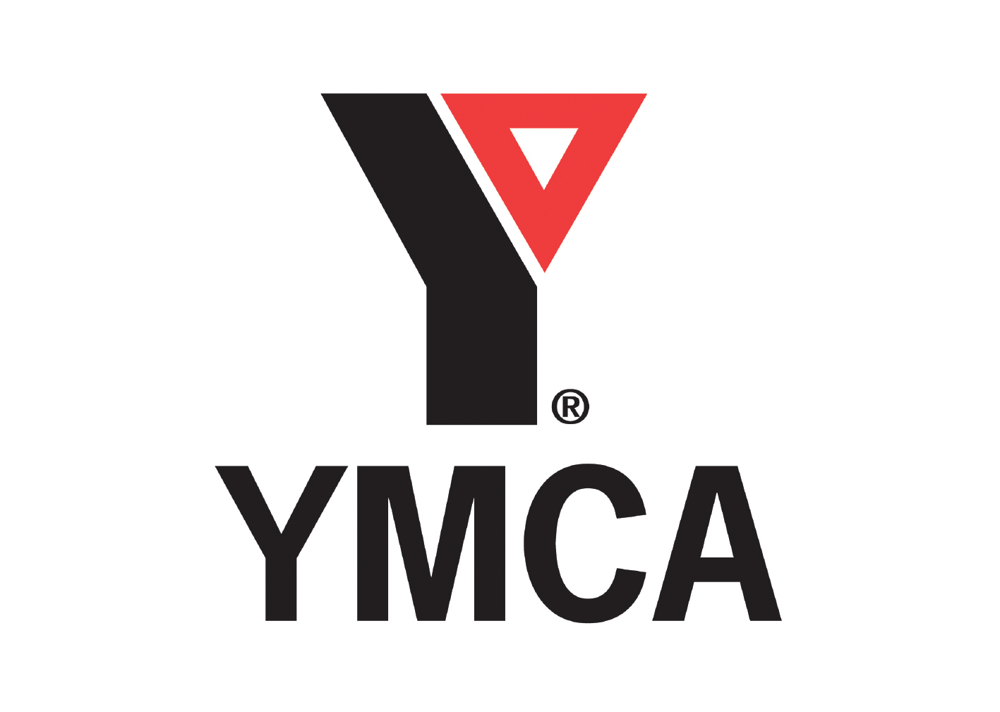

YMCA
Team
- Renzo Bautista
- Derek Hirata
- Yeon Soo Kim
Opportunity
The YMCA faces logistical issues with collecting attendance that waste the time of its instructors and the children enrolled. The issue stems from instructors having to take four distinct attendances for each child in every program. This process is painfully time consuming for the instructors and takes time away from the children actually participating in the activities. If the instructors only used one centralized attendance sheet, they would be able to spend more time with the children and the children would receive a higher quality experience at the YMCA.
Outcomes
By the end of our project, we created an application that accomplishes the following: • Allows administrators to import data from Daxko regarding students, programs, enrollments, YMCA sites, and YMCA branches; • Allows staff members to sign up and be verified by an administrator account; • Allows staff members to log in and take attendance for YMCA programs; • Allows staff members to record which snacks are provided on any given day for a program and which are received by students; • Requires guardians to set up a 4-digit PIN code to sign out their child (which can be overridden by the instructor’s own 4-digit code, or the YMCA master code); • Allows administrators to generate attendance and snack program reports; • Sends e-mail reminders to Deborah, Todd, and any branch directors whenever students attend programs that they are not enrolled in. To ensure the compatibility of our system with the current YMCA technological ecosystem, we learned more about the tools they use from key people in the organization -- Jennifer Bouchard, a program coordinator assuming a data analytics role, and Jim Needles, the Vice President of Business Information Systems. To ensure the compatibility of our system with the procedural ecosystem, we learned more about the snack program from Jeff Cox, a food program coordinator at the Allegheny site. We ran a series of paper prototype tests at the beginning of development, and have held weekly demos to ensure our application’s fit with our client’s needs.
Deliverables
Our project consists of the code that composes the system, which contains a documentation folder, and the server that hosts the system.